Спокойное хранение продуктов
Понятные правила хранения, качества и безопасной разморозки.
Курс по заготовкам и заморозке
Научитесь спокойно замораживать продукты, делать заготовки впрок, организовывать холодильник и собирать базу еды для всей семьи.
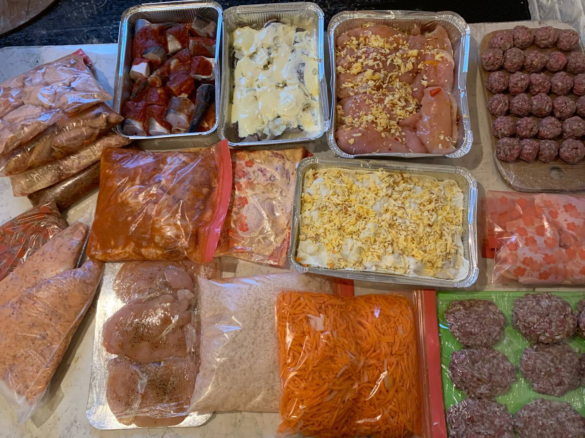
Безопасная заморозкасанитария, сроки, повторная заморозка
Удобная упаковкаконтейнеры, пакеты, маркировка
Порядок домахолодильник, кладовая, запасы
Еда впрокобеды, ужины, детские заготовки
Почему этот курс
Это цельная система для дома: что покупать, как готовить продукты к хранению, во что упаковывать, как подписывать и как потом размораживать без потери вкуса.
Курс закрывает весь бытовой путь: от безопасности и порядка в морозилке до готовых блюд, детских заготовок, бюджетного меню и быстрых ужинов.
Выбрать форматПонятные правила хранения, качества и безопасной разморозки.
Система упаковки и маркировки помогает видеть, что уже есть дома.
Готовая база еды освобождает 2–3 часа в день на ежедневной кухне.
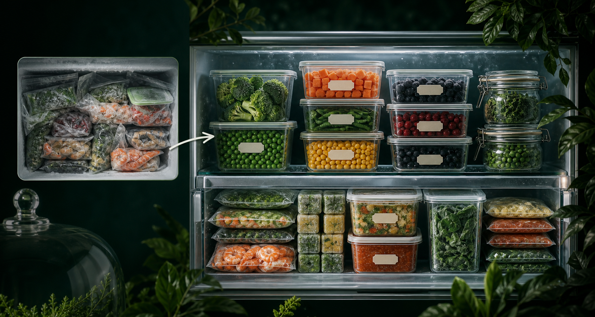
Вы видите запасы, быстрее собираете еду и легче планируете покупки.
Домашняя система Хадиджи
На курсе Хадиджа показывает свою реальную систему домашних заготовок: мясо, птицу, фарш, овощные пакеты, основы для супов и обедов, порционные контейнеры, детские заготовки и блюда, которые можно быстро достать из морозилки и подать к столу.
Это помогает не начинать готовку с нуля каждый день, а заранее подготовить то, что потом выручает семью в обычной жизни.
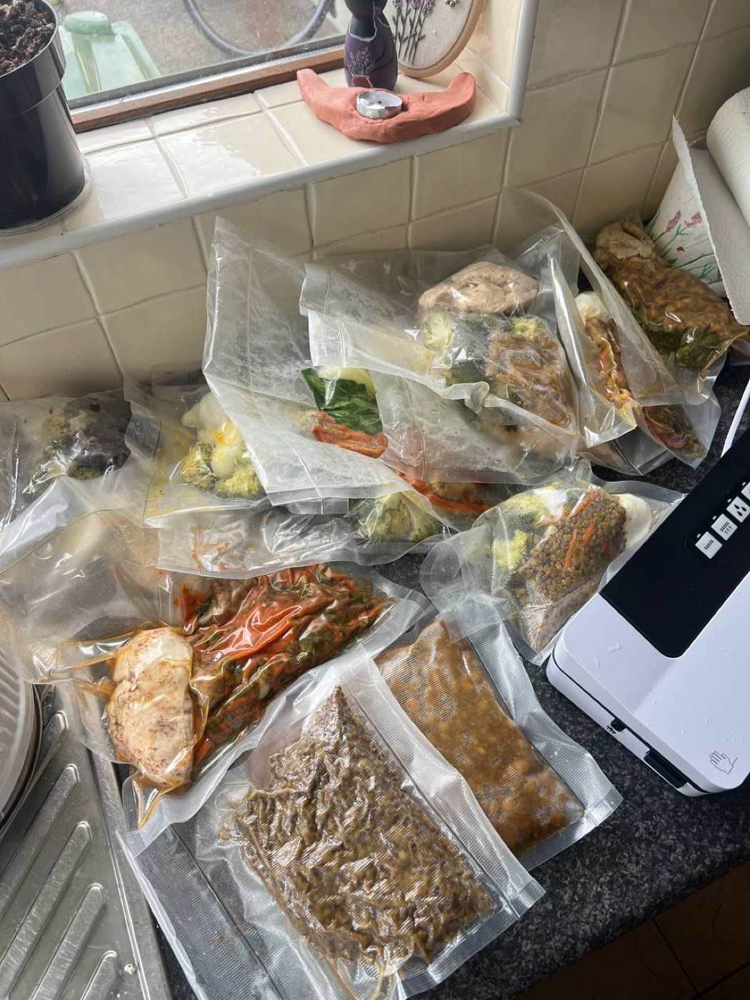
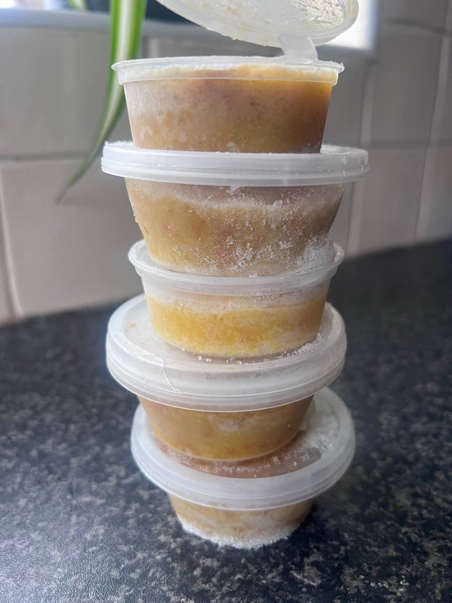
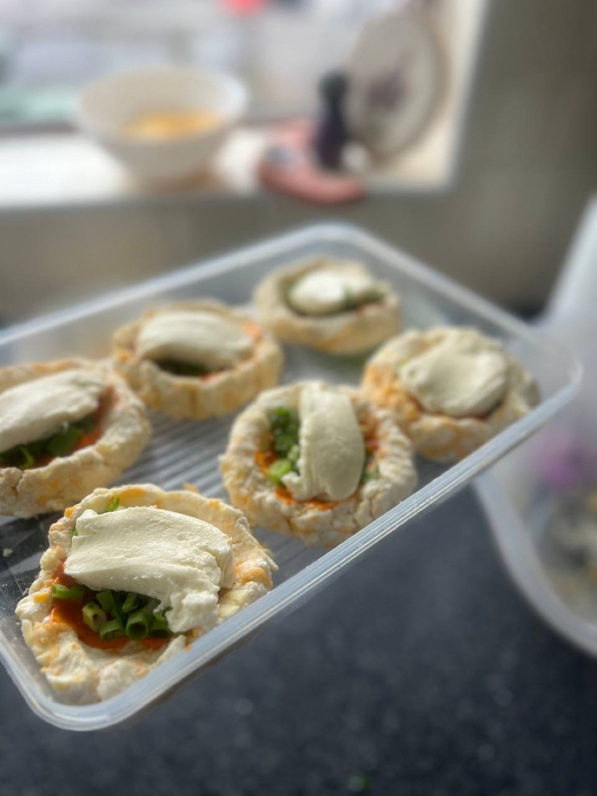
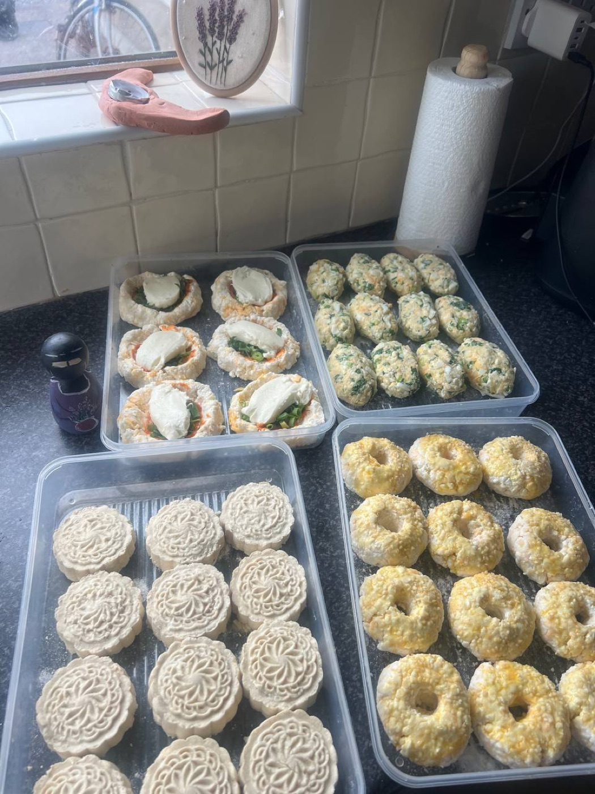
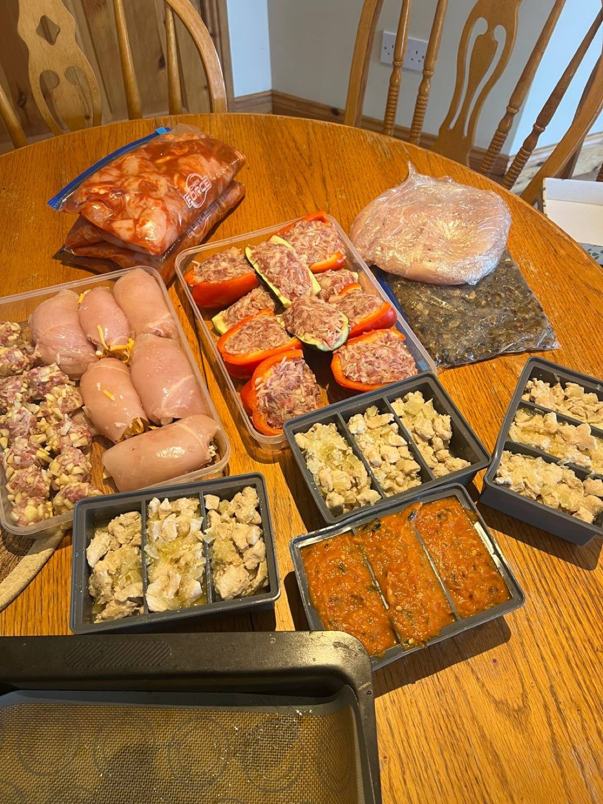
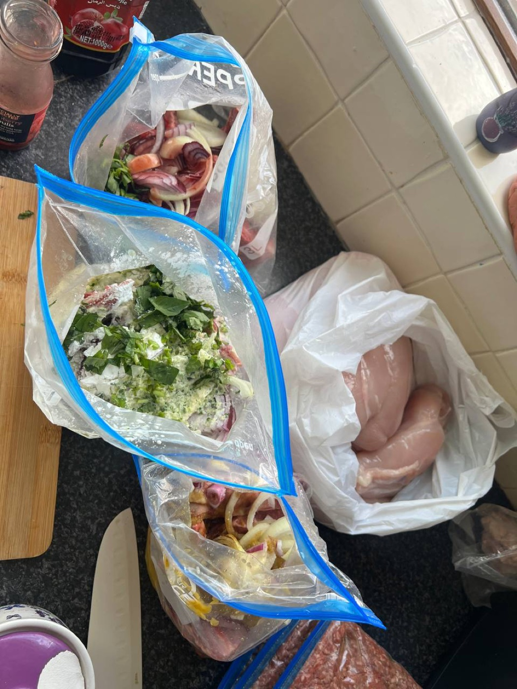
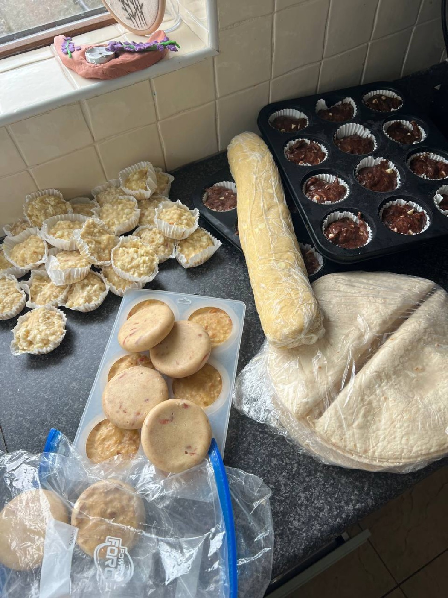
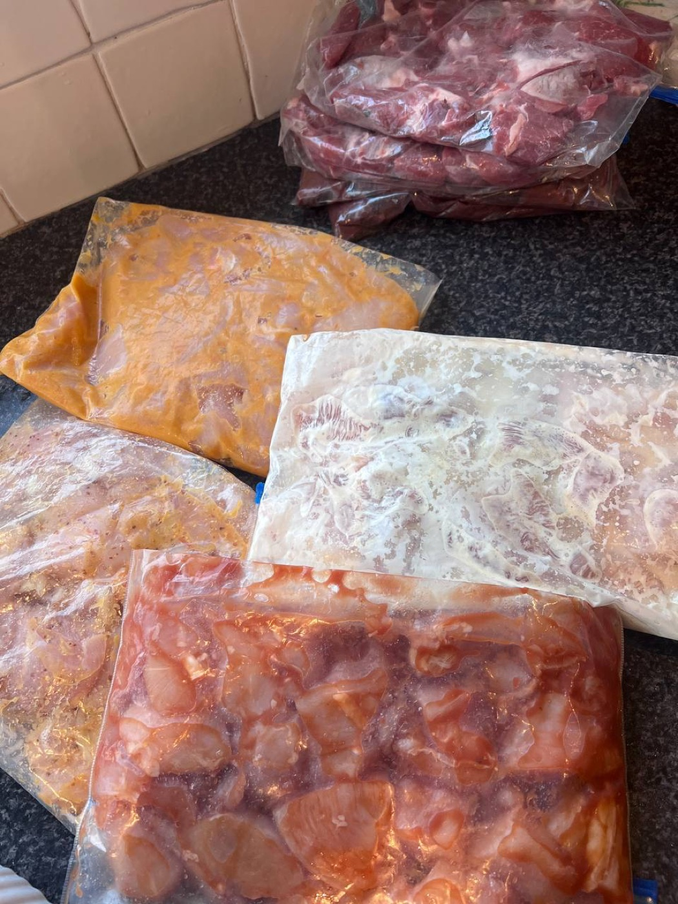
Структура курса
Результат после блока: появится уверенность в заморозке, хранении и заготовках впрок.
Результат после блока: подберёте подходящие контейнеры и расходники и организуете кухню удобно для себя.
Результат после блока: продукты будут храниться аккуратно, герметично и с сохранением вкуса после заморозки.
Результат после блока: в холодильнике появится порядок, а запасы будут хорошо видны и понятны.
Результат после блока: научитесь оценивать качество продуктов по понятным признакам.
Результат после блока: заморозка и разморозка станут понятной частью домашней системы.
Видео-уроки:
Отдельный видео-урок:
Памятки:
Видео-урок:
Презентация:
Материалы:
Результат после блока: освободите себе 2–3 часа в день за счёт готовых заготовок и базы еды дома.
Видео-урок:
Материалы:
Видео-урок:
Материалы:
Видео-урок:
Материалы:
Видео-урок:
Материалы:
Презентация:
Материалы:
Презентация:
Материалы:
Результат после блока: появится готовая база для быстрых блюд, продуманного меню и более лёгкой ежедневной кухни.
Что внутри
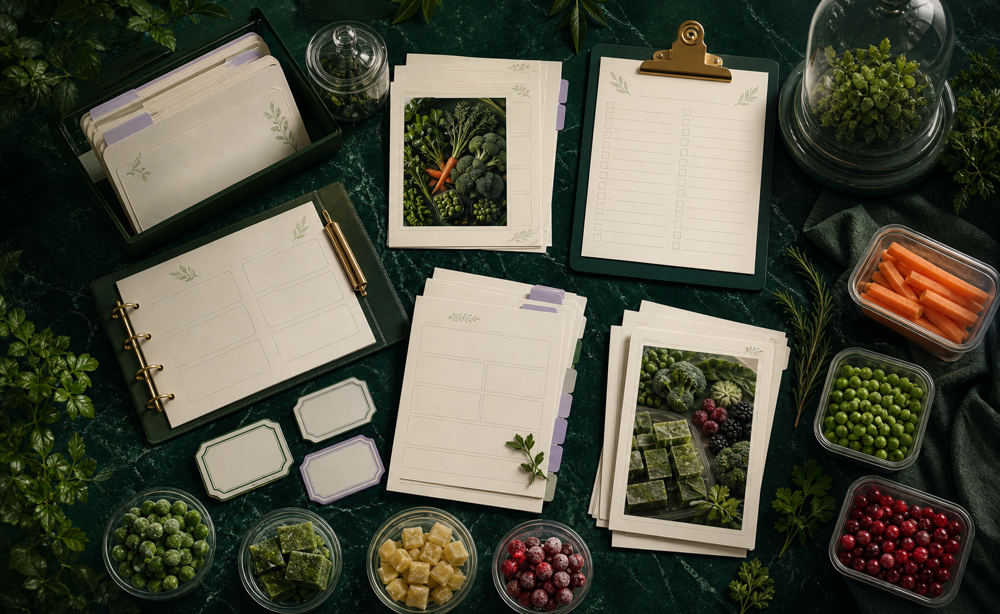
Всё собрано так, чтобы не искать по разным местам: правила, сроки, упаковка, заготовки по продуктам, готовые блюда и идеи меню.
Правила безопасной заморозки, санитария, повторная заморозка, правила хранения и признаки качества заготовок.
Пакеты, контейнеры, вакууматоры, наклейки, сроки хранения и простая система подписей без путаницы.
Бланширование, нарезка, подготовка к заморозке россыпью, порционная разделка и удаление воздуха.
Виды теста для заморозки, рецепты, правильная разморозка, сырники, оладьи и блинчики без слипания.
Томатные базы, суповые основы, бульоны, котлеты, фрикадельки, плов, тушёное мясо и готовые блюда.
Детские пюре, меню на бюджет, список покупок, полезные заготовки и идеи сбалансированных тарелок.
Опыт учениц Хадиджи
Здесь собраны живые отзывы учениц с разных курсов Хадиджи и сообщения о её подходе: как она объясняет, поддерживает и помогает внедрять знания в обычную жизнь.
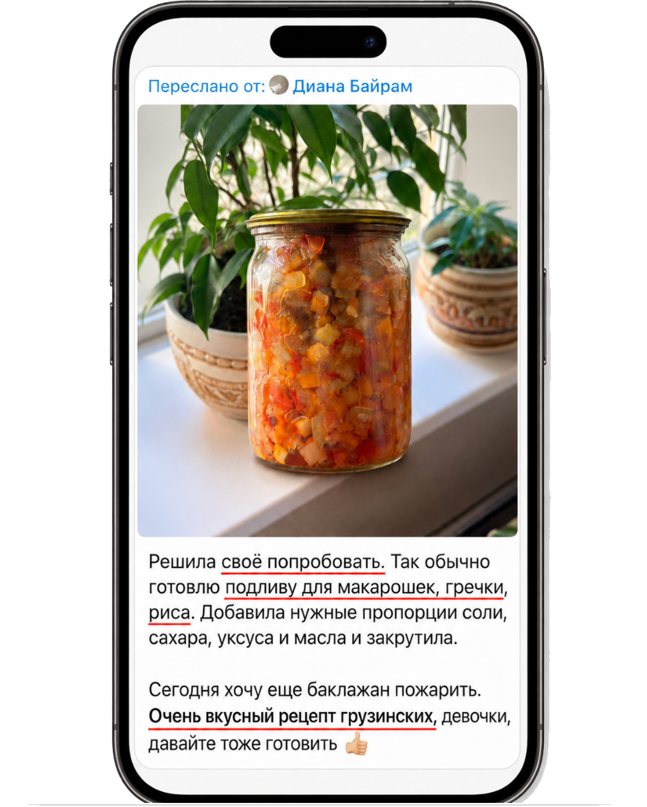


Тарифы
Самостоятельное прохождение курса в удобном темпе.
Прохождение курса с обратной связью от Хадиджи.
Хадиджа умм Ильяс
Лайфхаки для экономии времени и сил в ежедневных заботах. Проверенные рецепты, которые полюбит вся семья.
Оставить заявку